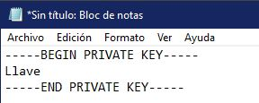
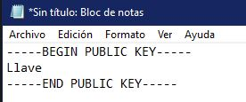

La firma electrónica es un conjunto de datos electrónicos que acompañan o que están asociados a un documento electrónico y cuyas funciones básicas son identificar al firmante de manera inequívoca, asegurar la integridad del documento firmado. Asegura que el documento firmado es exactamente el mismo que el original y que no ha sufrido alteración o manipulación, asegurar el no repudio del documento firmado. Los datos que utiliza el firmante para realizar la firma son únicos y exclusivos y, por tanto, posteriormente, no puede decir que no ha firmado el documento.
El cifrado asimétrico, también conocido como criptografía asimétrica o de clave pública, se utiliza para proteger archivos, carpetas y unidades completas contra el acceso no autorizado e intercambiar mensajes confidenciales. Para este propósito, se emplean unas claves que sirven para cifrar y descifrar los datos.
A diferencia de la criptografía simétrica, con este método los usuarios no comparten una clave secreta común (clave privada), sino que cada usuario crea su propio par de claves, que consiste en una clave secreta o privada y una clave pública. Cualquier persona que tenga la clave pública puede enviar datos cifrados al propietario de la clave privada, verificar su firma digital o autenticar su identidad.

Instrrucciones del cifrador
--------Generar llaves--------
Al presionar esta opción se descargara un documento text llamado llavero el cual contendrá tanto la llave pública como la llave privada.
--------Firma Digital--------
Al presionar esta opción reenviara al usuario un formulario en el cual se necesitara enviar un texto en plano y un archivo con la llave privada del usuario, ambos en formato txt, el archivo de la llave debe tener un formato similar al siguiente ejemplo:

Al presionar el boton Enviar, nos descargara un archivo con extensión .txt en el cual el contenido sera el mensaje en plano junto con un marcador [[[ y la firma.
--------Verificación--------
Al presionar esta opción reenviara al usuario un formulario en el cual se necesitara enviar el archivo firmado y un archivo con la llave pública del usuario que firmo, ambos en formato txt, el archivo de la llave debe tener un formato similar al siguiente ejemplo:

Al presionar el boton Enviar, nos mostrara un mensaje de exito en la verificación en caso de que el mensaje no haya sido modificado y la llave pública coinicida con la llave privada de quien firmó. En caso contrario mostrara un mensaje de error en la verificación.
Videos de interés